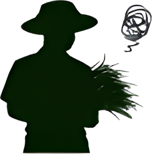

1. 주제 선정 배경
01 현장의 문제
모든 농경지에 같은 예방법
토양유실의 원인은 밭마다 다른데, 대책은 똑같다

효과는 불확실
비용은 농가가
“고랭지는 지형, 기후, 영농 방식의
영향이 커 특성을 고려한 관리가 필요하다.”
— 장선숙·김성준(2018, 한국농공학회논문집 60(4)
02 자료의 문제
여러 기관에 흩어진 환경자료
하나의 밭을 이해하려면, 여러 곳의 자료를 따로 찾아야 한다.
기관
여러 기관에 나뉘어 있어
한 번에 볼 수 없음
시점
만든 연도와 갱신 주기가
제각각임
형태
점, 선, 면, 격자가 섞여
그대로는 겹칠 수 없음
흩어진 정보와 농경지별 특성을 하나의 판단 근거로 연결할 필요가 있습니다.